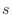
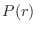

Next: The info object: obtaining Up: The SAXSData class: using Previous: SAXSData.saxs_read() Read Contents Index
Read in P(r) data. The file is text format, containing 3 columns: radius  in Å, , and experimental error (if determined). Comments start with '#'.
See also Model.saxs_pr().